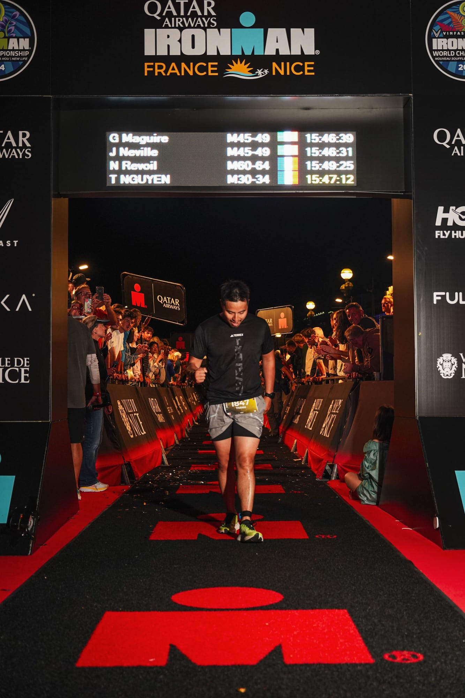
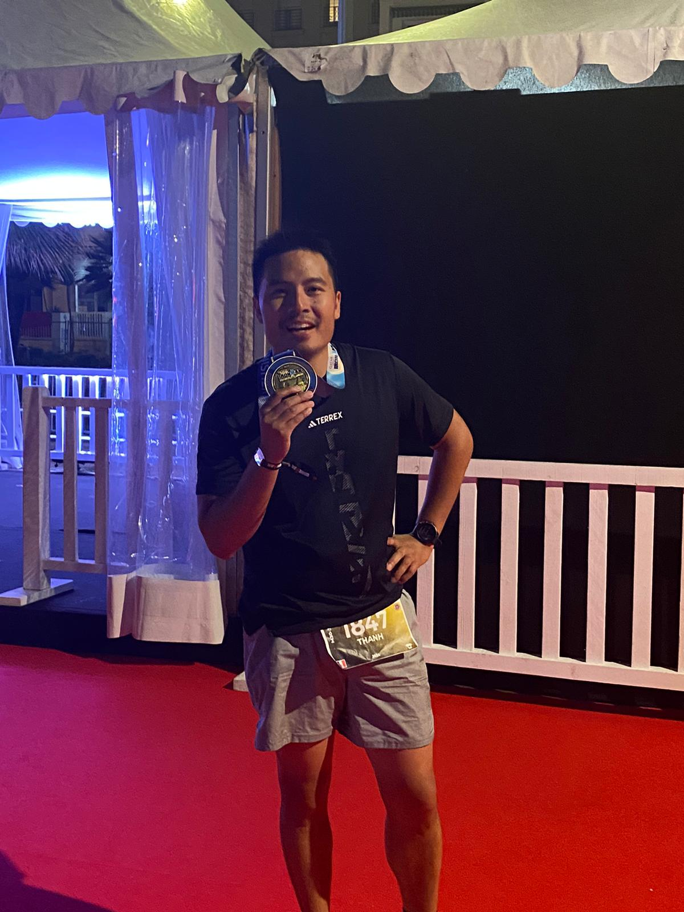
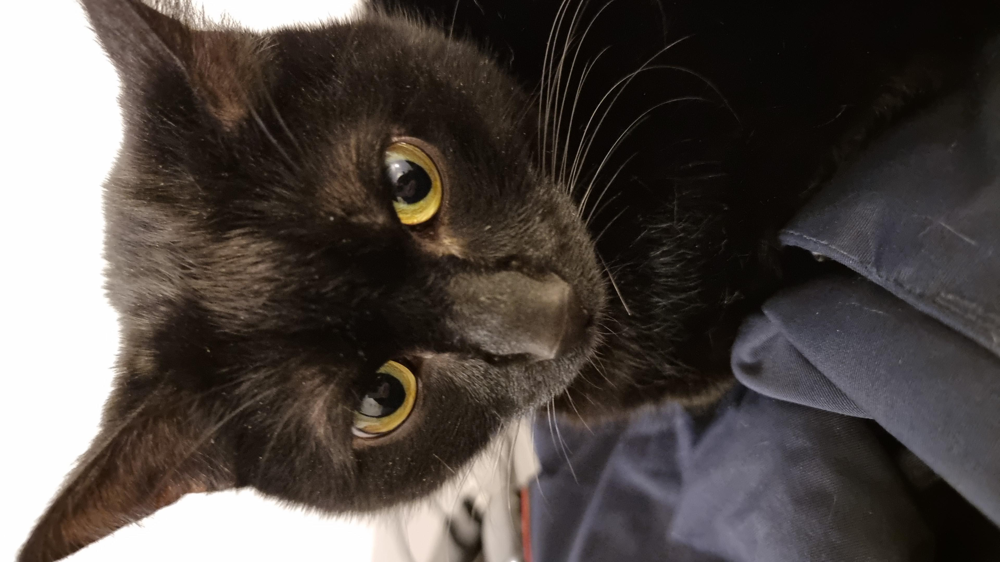

Qui suis je ?
Passionné, ouvert d'esprit et curieux du monde, j'aime découvrir et apprendre tous les jours.
Ma devise : Une journée sans apprendre de nouvelles choses est une journée de perdue !
Depuis Avril 2016 : Senior Trader
Modélisation, conception d'algorithmes d'auto-trading sur MT4 Trading Spot - Option Trading, Swap et Produits structurés Responsable la plateforme Reuters Electronic Trading Pricing Warrant Lux et Belges, Bonds Mise en euvre de projets comme Ullink
Années 2016-2017 : Enseignant vacataire
Intervenant pour le cours "Economie des marchés dérivés (application)"
Octobre 2015/ Mars 2016 : Stagiaire Treasury & Financial Market
Modélisation, conception d'algorithmes d'auto-trading sur MT4 Trading Spot - Option Trading et Swap
Mars 2015/ Juillet 2015 : Stagiaire en recherche mathématiques financières
Recherche sur les mouvements Browniens Multifractionnaires appliqués au modèle de Black&Scholes
2013 - 2016 : Gérant
Création de l'entreprise, comptabilité, gestion des employés et des stocks, recrutement.
2010 - 2015 : Co-Gérant de l'entreprise familiale et agent polyvalent
Gestion des stocks et des employés - Service en salle et aide cuisinier
| Poste | Entreprise | Années |
|---|---|---|
| Senior Trader | BIL | Depuis 2016 |
| Enseignant Vacataire | Université de Lorraine | 2016-2017 |
| Stagiaire | BIL | 2015-2016 |
| Stagiaire | Institut Elie Cartan | 2015 |
| Gérant | Bar Cosmopolitain | 2013-2016 |
| Co-gérant | Restaurant Cosmopolitain | 2010-2015 |
Ma grande passion est le sport, j'en ai pratiqué plusieurs depuis mon enfance comme le football, le volleyball ou encore les arts martiaux (judo et taekwendo).
J'ai également fondé avec des amis, une équipe de football(le club de AS Velaine en Haye), j'étais responsable des entrainements et de la trésorerie.
En commençant mes grandes études, le temps m'a manqué et j'ai donc commencé la course à pied ! J'ai fait plusieurs marathons comme celui de Paris et par la suite je me suis mis au triathlon (j'appelle çà le sport des athlètes "moyen", comme on n'est pas bon dans un, pourquoi ne pas l'être sur trois !). Et j'ai réalisé un de mes défis (parmi tant d'autres), je peux dire que je suis un "IRONMAN" ! Même si le temps n'est pas le meilleur, je suis arrivé au bout et je suis fier de moi et de la persévérance que j'ai eu, ainsi que de ma compagne qui m'a suivi tout le long de ma préparation et du parcours !


J'ai également d'autres hobbies comme l'entreprenariat, les sciences(mathématiques et physiques)
J'ai également un chat noir (pour moi cela porte chance haha)
